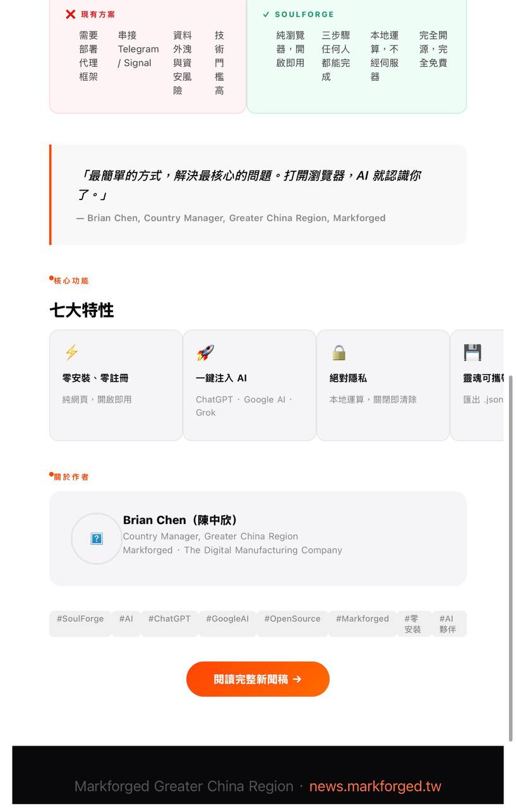
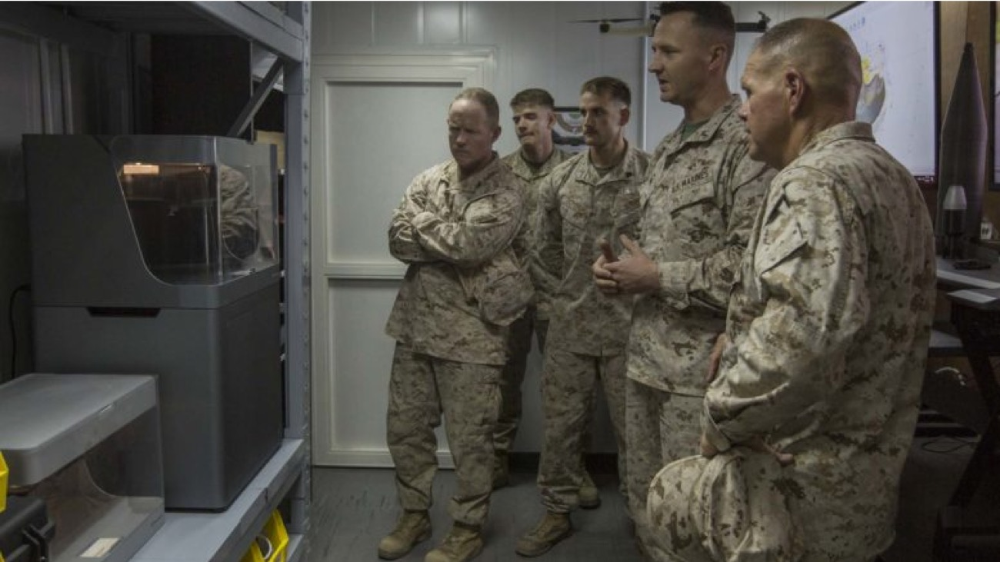

News & Insights

750 萬美元合約，驗證 300 台印表機網路
原始公告的副標把它的性質寫得很清楚：這是一個「串流式、智慧財產受保護」的製造網路。換句話說，這份合約不買設備，也不買零件。它要交付的是一套政府能夠驗證的安全數位製造環境，以及一個結論：複雜的國防零件可以按需、在不同地點生產，而且全程具備資料安全、可追溯性與品質保證。NCDMM 擔任主承包商，Automation Alley 主導設計與驗證，Markforged 與德國弗勞恩霍夫協會美國分會（Fraunhofer USA）為共同執行的技術與研究夥伴 —— 公告原文給這兩家的定語，分別是「工業級積層製造系統的領導供應商」與「世界級的應用研究組織」。
「Phase I 給我們的機會，是以真實而嚴謹的方式證明：安全的分散式積層製造不只是可行——它已經準備好了。」
Tom Kelly · Automation Alley 執行董事暨執行長（引自 2026-10-15 公告）
合約內容
一份不買設備、也不買零件的國防合約
依 Automation Alley 公告，Phase I 要完成三件技術工作：開發一套安全加密的數位工作流架構，對齊網路安全成熟度模型認證（CMMC）與美國國家標準暨技術研究院（NIST）的資安標準；識別並驗證候選的高分子與金屬武器系統零件；以及用已通過驗證的製程，把這些零件實際做出來。最後一項值得留意——不是打樣，是以合格參數生產。
四個單位的分工是清楚的。NCDMM 是主承包商 —— 它同時管理 America Makes，公告原文稱其為「全美在積層製造技術與教育領域的龍頭級公私夥伴機構」；NCDMM 本身在全美設有七個據點，另管理 Youngstown Innovation Hub 與 El Paso Makes，為 Manufacturing Technology Deployment Group（MTDG）之子機構。Automation Alley 是任務訂單的得標方，主導安全數位製造環境的設計與驗證；Markforged 提供工業級積層製造系統；Fraunhofer USA 負責應用研究。Automation Alley 把這個組合描述為積層製造技術、網路安全與製造製程驗證三種專長的整合。
問題的形狀
停產件把維修準備度壓在倉庫裡
公告把本案針對的痛點寫得很直接：既有國防零件經常遭遇供應鏈中斷、前置期過長、國內產能有限。這三件事在維持體系裡是連動的。一個停產多年的零件，原廠可能已經不做、模具可能已經報廢、合格供應商可能只剩一家；於是一個金額不大的零件，可以讓一台載具、一艘船或一架飛機停在原地數週到數月。
傳統的對策是囤料：把零件預先做出來放進倉庫，用庫存換時間，代價是資金、空間與報廢。積層製造提供的是另一條路——不囤零件，囤檔案，需要的時候在最靠近需求的地方把它做出來。這個概念本身不新。真正卡住它進入國防體系的，從來不是列印技術，而是資料：製造指令就是武器系統的智慧財產，一旦外流，等於把零件的設計拱手讓人。

串流製造
數位媒體怎麼被授權播放，製造指令就怎麼被授權製造
本案驗證的模式，Automation Alley 稱之為串流製造，並在公告中直接做了類比：就像數位媒體以安全授權的方式串流播放一樣，製造指令也以受控、可授權、可撤回的方式串流到製造端。這個類比的重點不在技術形式，而在權利關係——串流從來不是把檔案給你，而是在可撤回的條件下讓你用。
值得注意的是，這套邏輯一旦成立，軍方採購的對象就從零件變成了產能的使用權。這是一種與傳統軍購完全不同的關係。
核心交付
做法與憑據必須一起傳過去
公告把 Phase I 的核心交付項目寫得很具體：證明智慧產品配方（Smart Product Recipes, SPR）能端到端安全傳輸到分散各地的製造商，而且每一個生產出來的零件，都附帶完整的數位品質保證配方。
這句話把過去兩件分開的事綁成了一件。零件怎麼做是一回事，憑什麼相信它做對了是另一回事；在集中生產的年代，後者由工廠的資格、稽核與批次紀錄承擔。當生產地點散開之後，這套舉證機制跟著散開——而合約的要求是，讓它跟著檔案一起走。
這是分散式製造能不能被國防體系接受的關鍵。生產地點不再集中之後，品質的舉證責任必須有新的載體，否則分散出去的就不只是產能，還有風險。

不是從零開始
2020 年、300 台印表機，以及一次真正的緊急啟動
本案隸屬 Project DIAMOnD（Distributed, Independent, Agile Manufacturing on Demand），是 Automation Alley 的旗艦國防製造倡議。依其官方公開資料，這個網路並不是為這份合約而生：它在 2020 年透過 CARES Act 補助成立，最初的任務是加速密西根製造商的數位轉型，並在疫情期間強化個人防護裝備的供應鏈韌性；至該頁發布為止，計畫累計配發 300 台 3D 印表機給密西根州的製造商，涵蓋汽車、航太、工業加工與消費品等產業。
平時這些設備由各廠自行用於工業零件生產；遇到緊急訂單則整網調度。官方明載的實例，是為烏克蘭戰區 3D 列印止血帶零件。Markforged 是這個網路最初的列印設備供應者。
換句話說，這份合約要驗證的分散式網路並不是紙上架構，而是一個已經運轉五年、而且真的被緊急啟動過一次的實體網路。Phase I 要補上的，是它過去從未被正式驗證過的那一層：資料安全，以及品質的舉證。
對亞洲讀者的意義
分散製造的門檻，正在從設備移到資料治理
這則消息在美國被讀成一份國防合約，但它處理的問題並不限於國防。過去幾年，台灣與越南的供應鏈都在做同一件事：把生產據點分散、把風險分散。分散之後，多數企業遇到的是同一道關卡——圖檔送出去就收不回來。這也是為什麼不少關鍵件最後仍然留在原廠生產，寧可慢、寧可貴。
Markforged 的觀察是，設備可以買，網路可以建，但能不能通過客戶——尤其是政府單位與一級供應商——的資安審查，正在成為新的分水嶺。對備件壓力大的航太維修、軌道、能源與重工業客戶而言，數位庫存取代實體庫存這件事，一旦有了政府級的驗證路徑，就從概念變成可以開始談的架構。
另外一件事值得放進時間軸來看：這個網路是 2020 年開始建的，五年之後才有這份合約。能力是先建起來、再被需要的，不是倒過來。
完整案例報導（A4 · 7 頁）
本案的完整整理：能力缺口、串流製造的技術路徑、Phase I 交付標的、四方分工，以及 Project DIAMOnD 五年實證。國防技術文件版式，可直接下載引用。
你的備件清單裡，有幾個零件只剩一家供應商？
同樣的問題，台灣的航太維修、軌道、能源與國防供應鏈都在面對。我們可以用你實際的料號清單，一起盤一次：哪些適合轉成數位庫存、轉了之後交期與成本差多少、以及零件的品質憑據與圖檔管控要怎麼留。可安排台灣、香港或越南的現場演示。
談談你的備件清單資料來源
- Automation Alley 新聞稿：Automation Alley Awarded Contract to Advance Secure Distributed Additive Manufacturing（PR Newswire，2026 年 10 月 15 日）。本文所有合約事實均出自本篇。
https://www.prnewswire.com/news-releases/automation-alley-awarded-contract-to-advance-secure-distributed-additive-manufacturing-forthe-us-departmentof-war-302909514.html - Automation Alley 官網 Project DIAMOnD 專頁：2020 年成立、CARES Act 補助、累計配發 300 台印表機、烏克蘭止血帶零件。
https://www.automationalley.com/project-diamond - 3Dnatives：Markforged Provides 3D Printers for Project DIAMOnD（2021 年 1 月）——該網路首波列印設備供應者與涵蓋範圍。
https://www.3dnatives.com/en/markforged-provides-3d-printers-for-project-diamond-140120216/ - Metal AM 雜誌：Automation Alley to develop secure distributed AM network under $7.5M defence contract（2026 年 10 月）——國際金屬積層製造專業媒體對本案的獨立報導，事實與 10 月 15 日公告一致，另補述 Markforged 為麻州企業、Fraunhofer USA 總部設於密西根州。
https://www.metal-am.com/automation-alley-to-develop-secure-distributed-am-network-under-7-5-million-defence-contract/ - 名稱註記：美國國防部的法定名稱仍為 Department of Defense；Department of War 為 2025 年 9 月行政命令所定之對外名義，國會立法程序尚未完成。本文以實質執行單位美國陸軍為主詞。
← 回媒體中心 · www.markforged.tw